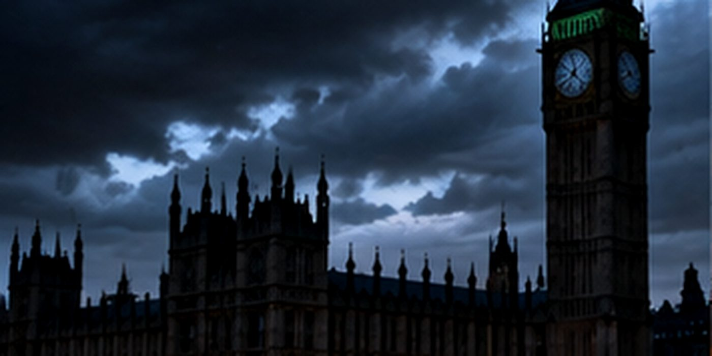

Black Sky Event: How Britain Plans to Restore Power After a Nationwide Blackout
Britain's grid restoration standard sets targets for recovery from a major outage; officials have not announced an imminent blackout.

Reporting note: Confirmed events and official warnings are distinguished from hypothetical scenarios and unverified attribution.
Britain's discussion of a so-called 'black sky' event is about emergency resilience, not a prediction that the country is about to lose electricity. The phrase describes an extreme scenario in which widespread power loss disrupts services that rely on the grid.
Under the Electricity System Restoration Standard, the system operator is expected to meet a restoration capability target from December 31, 2026: restoring 60 percent of demand in each region within 24 hours and the entire national system within five days. These are planning benchmarks, not guarantees that every home will regain electricity on that timetable.
A prolonged outage can also interrupt card payments, mobile communications, water pumping and fuel distribution. Officials advise basic household preparations such as a flashlight, battery-powered radio, power bank, drinking water and food.
No specific threat to the UK grid has been identified in the reporting prompting this renewed discussion. The distinction between a realistic emergency scenario and an active emergency matters.